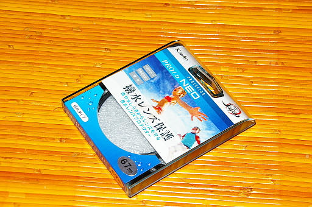

2018 年
09 月 17日 ( 月 )
レンズプロテクターが届いた
amazon でポチったレンズプロテクターが届きました。

ですが肝心のレンズがマップカメラからまだ届いていません。メーカー在庫も切れているそうなので、ラインでの製造が終わって在庫が発生するのを待っている状態です。PENTAX 用のレンズなので数があまり生産されてないのでしょうか？TAMRON がんばってくれ！！
しかしレンズ無しでプロテクターだけでどうしろと……レンズがいつになるかわからんし……
TAMRON、レンズ在庫の復活早くプリーズ！！
- Category :
- 日記
- カメラ
- 写真
- フィルター
- レンズプロテクター